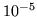

Building HMMs for discrete symbol sequences is essentially the same as described previously for continuous density systems. Firstly, a prototype HMM definition must be specified in order to fix the model topology. For example, the following is a 3 state ergodic HMM in which the emitting states are fully connected.
~o <DISCRETE> <StreamInfo> 1 1
~h "dproto"
<BeginHMM>
<NumStates> 5
<State> 2 <NumMixes> 10
<DProb> 5461*10
<State> 3 <NumMixes> 10
<DProb> 5461*10
<State> 4 <NumMixes> 10
<DProb> 5461*10
<TransP> 5
0.0 1.0 0.0 0.0 0.0
0.0 0.3 0.3 0.3 0.1
0.0 0.3 0.3 0.3 0.1
0.0 0.3 0.3 0.3 0.1
0.0 0.0 0.0 0.0 0.0
<EndHMM>
As described in chapter 7, the notation for discrete
HMMs borrows heavily on that used for continuous density models
by equating mixture components with symbol indices. Thus,
this definition assumes that each training data sequence contains
a single stream of symbols indexed from 1 to 10. In this example,
all symbols in each state have been set to be equally likely11.1. If prior information is available then this can of course be used
to set these initial values.
The training data needed to build a discrete HMM can take one of two forms. It can either be discrete (SOURCEKIND=DISCRETE) in which case it consists of a sequence of 2-byte integer symbol indices. Alternatively, it can consist of continuous parameter vectors with an associated VQ codebook. This latter case is dealt with in the next section. Here it will be assumed that the data is symbolic and that it is therefore stored in discrete form. Given a set of training files listed in the script file train.scp, an initial HMM could be estimated using
HInit -T 1 -w 1.0 -o dhmm -S train.scp -M hmm0 dproto
This use of HINIT is identical to that which would be
used for building whole word HMMs where no associated label file is
assumed and the whole of each training sequence is used to estimate
the HMM parameters. Its effect is to read in the prototype
stored in the file dproto and then use the training examples
to estimate initial values for the output distributions
and transition probabilities. This is done by firstly uniformly
segmenting the data and for each segment counting the number of occurrences
of each symbol. These counts are then normalised to provide output distributions
for each state. HINIT then uses the Viterbi algorithm to resegment
the data and recompute the parameters. This is repeated until convergence
is achieved or an upper limit on the iteration count is reached.
The transition probabilities at each step are estimated simply by
counting the number of times that each transition is made in the Viterbi alignments
and normalising. The final model is renamed dhmm and stored in
the directory hmm0.
When building discrete HMMs, it is important to floor the discrete probabilites so that no symbol has a zero probability. This is achieved using the -w option which specifies a floor value as a multiple of a global constant called MINMIX whose value is .
The initialised HMM created by HINIT can then be further refined if desired by using HREST to perform Baum-Welch re-estimation. It would be invoked in a similar way to the above except that there is now no need to rename the model. For example,
HRest -T 1 -w 1.0 -S train.scp -M hmm1 hmm0/dhmm
would read in the model stored in hmm0/dhmm and write out a new
model of the same name to the directory hmm1.